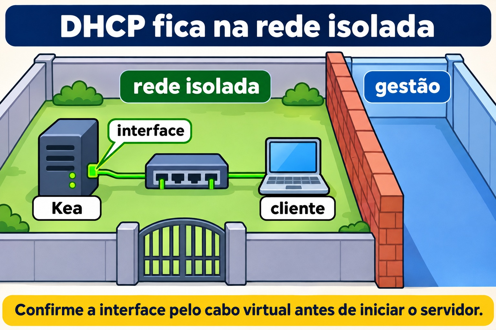
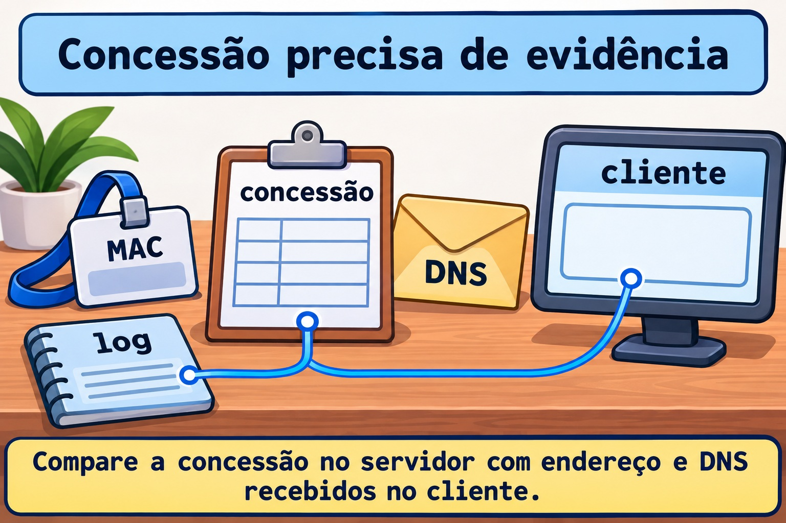

Aula 19.3 · DHCP
O coração desta aula: entregue concessões Kea somente na rede isolada e prove endereço, DNS e restauração do cliente.
| Ficha | Plano de trabalho |
|---|---|
| Módulo | M19 · Serviços de rede, aula 3 de 9 |
| Quando | Semana 25 |
| Ao final | entregue concessões Kea somente na rede isolada e prove endereço, DNS e restauração do cliente. |
| Pré-requisitos | M17, M18; VMs 201 e 202; usuário student; rede isolada vmbr17 |
| Duração | 80–110 minutos |
| Snapshot | m19a3-inicio e m19a3-fim; somente VMs indicadas |
O nó Proxmox recebe somente comandos identificados como host.
Os demais comandos pertencem à VM indicada, com Bash e usuário student.
Não execute blocos seguintes se uma verificação falhar.
Guarde a saída real no diário; esta aula não apresenta uma execução já realizada.
Conclua o guia de bancada M19 e preserve o DNS da 19.2.
A VM 202 usa o perfil isolado m19-isolada, estático .202/24, separado da gestão.
Nomes canônicos do módulo: o nome da VM no Proxmox e o hostname do sistema operacional devem corresponder ao papel antes de executar as guardas. Um nome DNS de serviço não muda o hostname. Se o inventário divergir, reconcilie-o pelo console antes de seguir; não ignore as guardas.
| VM | Hostname curto | Endereço isolado |
|---|---|---|
| 201 | rocky-lab | 192.0.2.201 |
| 202 | debian-lab | 192.0.2.202 |
| 204 | srv-deb | 192.0.2.204 |
| 212 | m19-client | DHCP; somente desafio 19.9 |
1 · Aquecimento
- Por que um servidor DHCP na bridge de gestão pode afetar máquinas que você não administra?
- Uma concessão inclui obrigatoriamente um gateway?
- Quem precisa provar a identidade da interface antes de iniciar Kea?
Desenhe DORA com as direções das quatro mensagens.
Marque endereço oferecido, servidor escolhido e confirmação final.
2 · Por que importa
Um endereço manual que funciona pode esconder a ausência de DHCP.
Uma concessão registrada no servidor pode esconder um cliente que aplicou opções diferentes.
O lab exige prova dos dois lados e reversão do cliente à base estática.
Os próximos serviços não devem depender de um endereço temporário obtido por acaso.
Ponte Windows
Escopo, concessão e reserva descrevem objetos diferentes.
Uma reserva identifica um cliente; não impede que ele configure manualmente outro endereço fora do seu controle.
3 · Modelo mental

Discover parte do cliente; Offer vem do servidor; Request escolhe a oferta; Ack confirma a concessão.
NAK e renovação são partes adicionais do protocolo.
O broadcast alcança o segmento local.
Neste lab não há relay nem roteador entre o cliente e o servidor.


Kea escuta somente a interface real correspondente à MAC de net1 da VM 204.
Nunca use *, o nome da bridge do host ou a interface da gestão.
4 · O essencial
| Objeto | Contrato |
|---|---|
| Servidor | 204 srv-deb; 192.0.2.204/24 |
| Rede | vmbr17 isolada; sem porta física ou IP no host |
| Pool | 192.0.2.100–192.0.2.149 |
| DNS | 192.0.2.204 |
| Domínio | lab.test |
| Gateway | Nenhum; opção routers ausente |
| Cliente | 202 net1; teste temporário; volta a .202 |
Kea separa servidor, backend de concessões e opções.
Usaremos DHCPv4 e backend memfile persistente; não precisamos de banco externo nem painel.
Rocky × Debian
O serviço principal roda em Debian 13 na VM 204.
A VM 201 pode servir de segundo cliente depois; os nomes de pacote e a política de firewall precisam ser conferidos por distribuição.
dnsmasq combina funções leves de DHCP e DNS; Kea é um servidor DHCP especializado.
A comparação é conceitual: não instale um segundo DHCP ativo nesta rede.
Decida 1
Você ainda não relacionou a MAC de net1 ao nome no Linux.
Qual ação cabe?
A. Usar todas as interfaces por cinco minutos.
B. Manter Kea mascarado e concluir a identificação.
C. Escutar em vmbr0 para encontrar o cliente.
5 · Lab guiado
Passo 1 · Conferir cabo virtual e preservar o estado
Palpite: O nome registrado em um arquivo basta para provar que o cabo virtual não mudou?
No host compare qm config 204 e qm config 202 com o guia de bancada.
Confirme net1 somente em vmbr17, sem uplink, sem outro DHCP ativo.
Não altere as NICs nesta aula.
qm snapshot 204 m19a3-inicio
qm snapshot 202 m19a3-inicioNa VM 204 verifique arquivo não simbólico, dono e permissões antes de carregar as variáveis locais criadas na 19.1.
Não carregue arquivos baixados como configuração de shell.
test ! -L /etc/m19-lab.env || exit 1
test "$(stat -c %u:%g:%a /etc/m19-lab.env)" = 0:0:644 || exit 1
cat /etc/m19-lab.env
. /etc/m19-lab.env
[[ "$LAB_IF" =~ ^[a-zA-Z][a-zA-Z0-9_-]{0,14}$ ]] || exit 1
test "$LAB_IP" = 192.0.2.204 || exit 1
test "$LAB_NET" = 192.0.2.0/24 || exit 1
ip -br link
ip -4 address show dev "$LAB_IF"
ip -4 route
sudo ss -lunp | grep -E ":67[[:space:]]" || trueA ausência de socket UDP 67 na VM 204 não prova ausência de outro DHCP no segmento.
Confirme o inventário de serviços do lab e capture um Discover se houver dúvida.
Pare se surgir oferta de origem desconhecida.
Saída esperada: LAB_IF confere com a MAC real de net1 e tem .204/24; nenhuma concessão foi iniciada.
Verifique: Se houver divergência, corrija a documentação e a interface pelo guia antes de seguir. Não adapte Kea à gestão como atalho.
Passo 2 · Instalar mascarado e preparar o escopo
Palpite: Validar JSON também garante que o socket abrirá na interface correta?
if dpkg-query -W -f='${Status}' kea-dhcp4-server 2>/dev/null | grep -q "install ok installed"; then exit 1; fi
sudo systemctl mask kea-dhcp4-server.service
sudo apt update && sudo apt install kea-dhcp4-server tcpdump
sudo cp -a /etc/kea/kea-dhcp4.conf /etc/kea/kea-dhcp4.conf.m19-original
sudo tee /etc/kea/kea-dhcp4.conf >/dev/null <<EOF
{
"Dhcp4": {
"interfaces-config": { "interfaces": [ "$LAB_IF" ] },
"lease-database": {
"type": "memfile",
"persist": true,
"name": "/var/lib/kea/kea-leases4.csv"
},
"valid-lifetime": 600,
"renew-timer": 300,
"rebind-timer": 450,
"subnet4": [ {
"id": 19,
"subnet": "192.0.2.0/24",
"pools": [ { "pool": "192.0.2.100 - 192.0.2.149" } ],
"option-data": [
{ "name": "domain-name-servers", "data": "192.0.2.204" },
{ "name": "domain-name", "data": "lab.test" }
]
} ],
"loggers": [ {
"name": "kea-dhcp4",
"output-options": [ { "output": "stdout" } ],
"severity": "INFO"
} ]
}
}
EOF
sudo chown root:_kea /etc/kea/kea-dhcp4.conf && sudo chmod 0640 /etc/kea/kea-dhcp4.conf || exit 1
sudo -u _kea kea-dhcp4 -t /etc/kea/kea-dhcp4.conf || exit 1Os tempos acima são parâmetros escolhidos para observar renovação no lab, não durações medidas.
Não há opção de roteador: o segmento só precisa alcançar serviços locais.
O validador de Kea 2.6 verifica a configuração, mas não substitui inicialização, sockets, logs e uma concessão real.
Não edite o CSV de concessões manualmente.
Saída esperada: Configuração aceita pelo validador e daemon ainda mascarado. A única interface listada é a identificada pela MAC isolada.
Verifique: Leia arquivo completo: pool não inclui servidores estáticos, domínio correto, DNS .204 e nenhuma opção routers.
O arquivo escrito pelo heredoc deve ser root:_kea 0640. O diretório /etc/kea pode pertencer a _kea:_kea com modo 0750; o perfil AppArmor pode negar dac_override até ao root. Por isso validamos como _kea, conferindo o acesso previsto sem desativar AppArmor. Após alterações e restaurações, preserve dono, grupo e modo.
Passo 3 · Iniciar somente após a prova da interface
Palpite: Um firewall permissivo compensa escutar na interface errada?
Se há firewall ativo, aplique o procedimento M16 para DHCPv4 somente nessa interface: cliente UDP 68 para servidor UDP 67, incluindo broadcast local.
Preserve a gestão e a política existente.
sudo -u _kea kea-dhcp4 -t /etc/kea/kea-dhcp4.conf && sudo systemctl unmask kea-dhcp4-server.service && sudo systemctl enable --now kea-dhcp4-server.service
sudo systemctl --no-pager --full status kea-dhcp4-server
sudo journalctl -u kea-dhcp4-server -b --no-pager -n 50
sudo ss -lunp | grep -E ":67[[:space:]]"
sudo timeout 25 tcpdump -ni "$LAB_IF" -e -vv "udp port 67 or udp port 68"Kea pode usar sockets raw; por isso uma única linha de ss não identifica todo o caminho.
Compare configuração, log de abertura da interface e captura no dispositivo real.
Saída esperada: O daemon inicia sem erro e informa somente a interface isolada. Sem cliente novo, pode não haver DORA durante a captura.
Verifique: Se o daemon abrir a interface errada, pare-o imediatamente, mantenha mascarado e corrija a origem. Nunca teste uma oferta na gestão.
Passo 4 · Pedir uma concessão em um perfil temporário
Palpite: Trocar o método IPv4 do perfil de gestão seria equivalente a trocar o perfil isolado?
Na VM 202, mantenha uma sessão SSH pela gestão e o console disponíveis.
Relacione net1 à MAC, encontre o UUID de m19-isolada e registre a configuração antes da troca.
ip -br link
nmcli -f NAME,UUID,TYPE,DEVICE connection show
read -r -p "Interface da MAC de net1 da VM 202: " CLIENT_IF
read -r -p "UUID do perfil m19-isolada: " BASE_UUID
[[ "$CLIENT_IF" =~ ^[a-zA-Z][a-zA-Z0-9_-]{0,14}$ ]] || exit 1
[[ "$BASE_UUID" =~ ^[0-9a-fA-F-]{36}$ ]] || exit 1
test "$(nmcli -g connection.id connection show "$BASE_UUID")" = m19-isolada || exit 1
nmcli connection show "$BASE_UUID" > ~/m19a3-base-profile.txt
nmcli -f GENERAL,IP4 device show "$CLIENT_IF"
ip -4 routeConfirme perfil estático .202/24, interface exata e rota padrão somente pela gestão.
Se não conferirem, volte ao guia.
Verifique que não existe um perfil antigo chamado m19-dhcp-test.
Antes de ativar o perfil, abra uma segunda sessão na VM 204 e repita a captura tcpdump na LAB_IF isolada. Inicie a captura imediatamente antes de nmcli up na VM 202, para que a janela inclua DORA.
if nmcli -t -f NAME connection show | grep -Fxq m19-dhcp-test; then exit 1; fi
sudo nmcli connection add type ethernet ifname "$CLIENT_IF" con-name m19-dhcp-test connection.autoconnect no ipv4.method auto ipv4.never-default yes ipv4.dns-priority 200 ipv6.method disabled
TEST_UUID=$(nmcli -g connection.uuid connection show m19-dhcp-test)
[[ "$TEST_UUID" =~ ^[0-9a-fA-F-]{36}$ ]] || exit 1
printf '%s
%s
%s
' "$CLIENT_IF" "$BASE_UUID" "$TEST_UUID" > ~/m19a3-client-state.txt
sudo nmcli connection up uuid "$TEST_UUID" ifname "$CLIENT_IF"
nmcli -f GENERAL,IP4,DHCP4 device show "$CLIENT_IF"
ip -4 routePrioridade DNS 200 mantém o DNS de gestão com preferência se sua prioridade for menor, conforme o guia.
Se a política real divergir, pare e registre antes de ativar; não cause uma troca global de DNS como efeito colateral.
Saída esperada: Apenas net1 recebe um endereço do pool; DHCP4 mostra DNS .204 e domínio. A rota padrão de gestão permanece igual.
Verifique: Compare MAC do cliente, endereço recebido, servidor DHCP e opções. A seção DHCP4 contém valores reais: não copie uma concessão ilustrativa no diário.
Passo 5 · Confrontar cliente, servidor e reserva
Palpite: Ver um endereço no cliente prova que veio deste Kea?


Na VM 204 leia o journal e as concessões sem alterar o CSV.
Compare endereço e identidade com os dados reais da VM 202.
sudo journalctl -u kea-dhcp4-server -b --no-pager -n 80
sudo head -n 1 /var/lib/kea/kea-leases4.csv
sudo tail -n 15 /var/lib/kea/kea-leases4.csvCSV memfile pode conter várias linhas históricas do mesmo endereço até a limpeza periódica.
Não conte linhas como se fossem clientes ativos; interprete cabeçalho, identidade e validade da concessão.
Na VM 202 faça consultas explícitas ao DNS recebido, preservando o resolvedor de gestão.
dig @192.0.2.204 app.lab.test A
dig @192.0.2.204 lab.test MX
ip -4 address show dev "$CLIENT_IF"Agora aplique uma reserva controlada para o cliente 202: .150 fica fora do pool dinâmico. Confira no inventário que está livre antes de atribuí-lo.
Na VM 202 leia a MAC real de net1 com cat /sys/class/net/"$CLIENT_IF"/address; compare com net1 no nó. Copie somente esse valor no pedido seguinte na VM 204.
read -r -p "MAC real de net1 da VM 202: " CLIENT_MAC
[[ "$CLIENT_MAC" =~ ^([0-9a-fA-F]{2}:){5}[0-9a-fA-F]{2}$ ]] || exit 1
sudo test ! -e /etc/kea/kea-dhcp4.conf.before-reservation || exit 1
sudo cp -a /etc/kea/kea-dhcp4.conf /etc/kea/kea-dhcp4.conf.before-reservation
sudo python3 - "$CLIENT_MAC" <<'PY'
import json,sys
p="/etc/kea/kea-dhcp4.conf"
with open(p) as f: c=json.load(f)
s=c["Dhcp4"]["subnet4"][0]
assert s["subnet"] == "192.0.2.0/24"
assert "reservations" not in s
s["reservations"]=[{"hw-address":sys.argv[1].lower(),"ip-address":"192.0.2.150"}]
with open(p,"w") as f: json.dump(c,f,indent=2); f.write("\n")
PY
sudo -u _kea kea-dhcp4 -t /etc/kea/kea-dhcp4.conf && sudo systemctl restart kea-dhcp4-server
sudo journalctl -u kea-dhcp4-server -b --no-pager -n 25Se a validação falhar, não reinicie: restaure a cópia anterior e valide novamente. Confira que o arquivo preservou a única interface isolada e que o pool não mudou.
Na VM 202 reative apenas o perfil temporário; o perfil de gestão continua ativo. Uma nova aquisição deve agora receber .150, identificado pela MAC real.
sudo nmcli connection down uuid "$TEST_UUID"
sudo nmcli connection up uuid "$TEST_UUID" ifname "$CLIENT_IF"
nmcli -f GENERAL,IP4,DHCP4 device show "$CLIENT_IF"Compare a nova concessão nos logs Kea e no cliente. Preserve a reserva para essa MAC; outros clientes continuam usando o pool e no Passo 6 o cliente 202 volta ao estático .202.
Saída esperada: A concessão real tem correspondência entre cliente e servidor. Você distingue pool dinâmico, reserva e endereço estático.
Verifique: DNS recebido e resposta correta são provas separadas. Um servidor DHCP pode entregar uma opção sintaticamente válida e semanticamente errada.
Decida 2
O endereço está no pool, mas DNS aponta para outro servidor.
O que fazer?
A. Comparar opções da concessão, origem da oferta e configuração aplicada.
B. Dar um gateway qualquer ao cliente.
C. Aceitar porque obter um endereço prova tudo.
Passo 6 · Restaurar o cliente e conferir o boot
Palpite: Apagar o perfil temporário garante que o perfil estático voltou a ficar ativo?
Na mesma sessão Bash da VM 202, use somente os UUIDs registrados.
Se reconectou, leia o diário e confira cada valor com nmcli antes de defini-lo; não execute o diário como script.
test "$(nmcli -g connection.id connection show "$BASE_UUID")" = m19-isolada || exit 1
test "$(nmcli -g connection.id connection show "$TEST_UUID")" = m19-dhcp-test || exit 1
sudo nmcli connection up uuid "$BASE_UUID" ifname "$CLIENT_IF"
nmcli -f GENERAL,IP4 device show "$CLIENT_IF"
ip -4 routeSó depois de conferir .202/24 e gestão preservada, remova o perfil temporário pelo UUID exato.
Nunca use uma remoção por padrão amplo.
sudo nmcli connection delete uuid "$TEST_UUID"
dig @192.0.2.204 app.lab.test A
nmcli -f NAME,UUID,DEVICE connection show --activeReboot de conferência: Reinicie 202 pelo console e prove gestão, perfil estático isolado e DNS explícito. Reinicie 204 separadamente e prove BIND e Kea na interface correta.
Na VM 204, após o reboot:
sudo systemctl is-active named kea-dhcp4-server
sudo -u _kea kea-dhcp4 -t /etc/kea/kea-dhcp4.conf
sudo journalctl -u kea-dhcp4-server -b --no-pager -n 35
ip -4 address
ip -4 routeSaída esperada: Kea permanece disponível apenas no isolamento. O cliente 202 terminou estático .202, pronto para as próximas aulas.
Verifique: No host faça os snapshots finais de 204 e 202. Preserve Kea para o desafio 19.9; não crie a VM 212 agora.
qm snapshot 204 m19a3-fim
qm snapshot 202 m19a3-fim6 · Quebre e conserte
Quebra 1 · JSON recusado antes de iniciar
Sintoma: A cópia de exercício não passa no validador.
Investigação: Copie o arquivo para /tmp/m19-kea-broken.json, remova uma vírgula só nessa cópia e execute sudo kea-dhcp4 -t /tmp/m19-kea-broken.json.
Causa: A estrutura JSON não representa a configuração pretendida.
Conserto: Reponha a vírgula na cópia e valide novamente; não carregue o arquivo quebrado no serviço.
Verifique: A configuração ativa continua respondendo e a cópia corrigida passa.
Prevenção: Valide antes de iniciar ou reiniciar.
Quebra 2 · Cliente sem oferta
Sintoma: O perfil DHCP espera e não recebe endereço.
Investigação: Capture na interface isolada; compare Discover, journal Kea, MAC e bridge das duas VMs.
Causa: Pode haver cabo virtual errado, interface errada, daemon parado ou filtragem.
Conserto: Corrija somente a causa observada. Em interface incerta, pare Kea; nunca abra todas as interfaces.
Verifique: Uma oferta do servidor esperado é seguida por Request e Ack.
Prevenção: Relacione MAC e dispositivo antes da primeira oferta.
Quebra 3 · Endereço certo, DNS errado
Sintoma: O cliente tem endereço do pool, mas os nomes do lab falham.
Investigação: Compare opções DHCP4 e consulta explícita ao endereço DNS recebido.
Causa: A opção DNS pode estar errada ou o serviço DNS pode estar inacessível.
Conserto: Corrija a opção no arquivo conhecido, valide e reinicie Kea somente após verificar a interface; renove o perfil de teste controlado.
Verifique: A nova concessão mostra .204 e a consulta explícita responde.
Prevenção: Valide opções semânticas além do endereço do pool.
7 · Armadilhas
Antes de culpar o serviço, confirme em qual VM, interface e rede você está.
Uma resposta correta de outro servidor continua sendo a prova errada.
Um arquivo aceito pelo validador não prova que o processo o carregou.
Consulte também o estado, os sockets e a resposta do cliente.
Endereços de documentação usados aqui só pertencem ao segmento segregado.
Se houver sobreposição com gestão, VPN ou rota existente, pare.
8 · Quiz
- Por que não existe opção routers nesta configuração?
- O que distingue Offer de Ack?
- O validador prova a abertura do socket?
- Uma reserva pertence obrigatoriamente ao pool dinâmico?
- Como o cliente deve terminar a aula?
Responda antes de abrir as soluções.
Para cada resposta, cite uma observação capaz de refutá-la.
9 · Cola
sudo -u _kea kea-dhcp4 -t /etc/kea/kea-dhcp4.conf
sudo journalctl -u kea-dhcp4-server -b --no-pager -n 40
ip -4 address
nmcli -f GENERAL,IP4,DHCP4 device showFlashcards: Qual é o objeto? Quem responde? Qual observação distingue configuração de resultado?
!explica
!feynman
!quiz
10 · Checklist e fechamento
- [ ] MAC e interface real de net1 conferidas antes de iniciar.
- [ ] Kea sozinho no isolamento; nenhum DHCP na gestão.
- [ ] Concessão e DNS comparados nos dois lados.
- [ ] Cliente 202 restaurado ao perfil estático.
- [ ] Kea persistente e VM 212 ainda não criada.
Último exercício: Refaça o desenho inicial usando somente evidências registradas no lab. Marque o que ainda não foi provado.
O snapshot final registra uma etapa coerente; não substitui o backup independente.
Não apague a VM 204 nem sua rede isolada: as próximas aulas dependem delas.
11 · Na vida real
Missão somente de leitura: em um ambiente autorizado, identifique o servidor consultado, a interface usada e o responsável pela configuração.
Não altere perfis, portas, concessões ou zonas.
Entregue três evidências com horário e contexto, uma hipótese e uma limitação.
Remova dados privados antes de compartilhar o relatório.
12 · Aprofundar quando quiser
Kea 2.6: configuração DHCPv4, concessões e reservas
Debian 13: pacote kea-dhcp4-server
NetworkManager: propriedades IPv4
Use a documentação da versão instalada.
Confirme com o manual local antes de adaptar uma opção de outra versão.
Soluções comentadas
Aquecimento: broadcast pode alcançar terceiros na mesma rede; gateway é uma opção e não uma obrigação; o operador deve conferir MAC e cabo virtual.
Decida 1: B.
Sem prova da interface, o servidor permanece mascarado.
Decida 2: A.
Endereço recebido não prova opções corretas nem origem da concessão.
Quiz 1: o segmento não tem roteador nem precisa de rota padrão.
Quiz 2: Offer propõe; Ack confirma a concessão solicitada.
Quiz 3: não; exige início, log da interface e conversa real.
Quiz 4: não; .150 foi planejado fora do pool e deve estar livre.
Quiz 5: perfil m19-isolada estático .202/24, gestão preservada e perfil temporário removido pelo UUID exato.